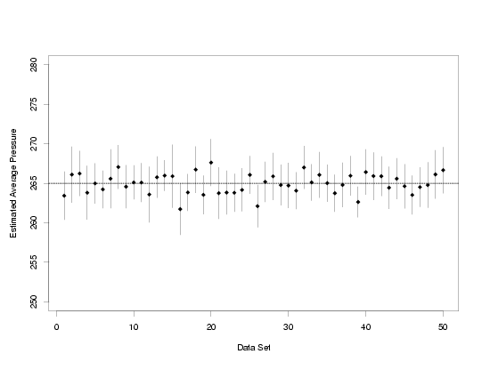

4.
Process Modeling
4.5.
Use and Interpretation of Process Models
4.5.1.
What types of predictions can I make using the model?
4.5.1.1.
|
How do I estimate the average response for a particular set of predictor variable values?
|
|
|
Step 1: Plug Predictors Into Estimated Function
|
Once a model that gives a good description of the process has been developed, it can be used for
estimation or prediction. To estimate the average response of the process,
or, equivalently, the value of the regression function, for any particular combination of
predictor variable values, the values of the predictor variables are simply substituted in the
estimated regression function itself. These estimated function values are often called "predicted
values" or "fitted values".
|
|
Pressure / Temperature Example
|
For example, in the Pressure/Temperature process, which
is well described by a straight-line model relating pressure (\(y\))
to temperature (\(x\)),
the estimated regression function is found to be
$$ \hat{y} = 7.74899 + 3.93014 \cdot x $$
by substituting the estimated parameter values into
the functional part of the model. Then to estimate the average pressure at a temperature of 65,
the predictor value of interest is subsituted in the estimated regression function, yielding an
estimated pressure of 263.21.
$$ \begin{array}{ccl}
\hat{y} & = & 7.74899 + 3.93014 \cdot 65
& & \\
& = & 263.21
\end{array} $$
This estimation process works analogously for nonlinear models, LOESS models, and all other
types of functional process models.
|
|
Polymer Relaxation Example
|
Based on the output from fitting the stretched exponential model in time (\(x_1\))
and temperature (\(x_2\)),
the estimated regression function for the
polymer relaxation data is
$$ \hat{y} = 4.99721 + 3.01998\exp\left[-\left(\frac{x_1}{3.06885+0.04187x_2+0.01441x_2^2}\right)^{1.16612}\right] $$
Therefore, the estimated torque (\(y\))
on a polymer sample after 60 minutes at a temperature of 40 is 5.26.
|
|
Uncertainty Needed
|
Knowing that the estimated average pressure is 263.21 at a temperature of 65, or that the estimated
average torque on a polymer sample under particular conditions is 5.26, however, is not enough
information to make scientific or engineering decisions about the process. This is because the
pressure value of 263.21 is only an estimate of the average pressure at a temperature of 65.
Because of the random error in the data, there is also random error in the estimated regression
parameters, and in the values predicted using the model. To use the model correctly, therefore,
the uncertainty in the prediction must also be quantified. For example, if the safe operational
pressure of a particular type of gas tank that will be used at a temperature of 65 is 300,
different engineering conclusions would be drawn from knowing the average actual pressure in the
tank is likely to lie somewhere in the range \(263 \pm 52\)
versus lying in the range \(263.21 \pm 0.52\).
|
|
Confidence Intervals
|
In order to provide the necessary information with which to make engineering or scientific
decisions, predictions from process models are usually given as intervals of plausible values that
have a probabilistic interpretation. In particular, intervals that specify a range of values that
will contain the value of the regression function with a pre-specified probability are often used.
These intervals are called confidence intervals. The probability with which the interval will
capture the true value of the regression function is called the confidence level, and is most
often set by the user to be 0.95, or 95 % in percentage terms. Any value between 0 % and 100 % could
be specified, though it would almost never make sense to consider values outside a range of about
80 % to 99 %. The higher the confidence level is set, the more likely the true value of the
regression function is to be contained in the interval. The trade-off for high confidence, however,
is wide intervals. As the sample size is increased, however, the average width of the intervals
typically decreases for any fixed confidence level. The confidence level of an interval is usually
denoted symbolically using the notation \(1-\alpha\),
with \(\alpha\)
denoting a user-specified probability, called the significance
level, that the interval will not capture the true value of the regression function. The
significance level is most often set to be 5 % so that the associated confidence level will be 95 %.
|
|
Computing Confidence Intervals
|
Confidence intervals are computed using the estimated standard deviations of the estimated regression function values and
a coverage factor that controls the confidence level of the interval and accounts for the variation in the estimate of the
residual standard deviation.
|
|
|
The standard deviations of the predicted values of the estimated regression function depend
on the standard deviation of the random errors in the data, the experimental design
used to collect the data and fit the model, and the values of the predictor variables used to
obtain the predicted values. These standard deviations are not simple quantities that
can be read off of the output summarizing the fit of the model, but they can often be obtained from
the software used to fit the model. This is the best option, if available, because there are a
variety of numerical issues that can arise when the standard deviations are calculated directly
using typical theoretical formulas. Carefully written software should minimize the numerical
problems encountered. If necessary, however, matrix formulas that can be used to directly compute
these values are given in texts such as Neter, Wasserman, and Kutner.
|
|
|
The coverage factor used to control the confidence level of the intervals depends on the
distributional assumption about the errors and the amount of information available to estimate
the residual standard deviation of the fit. For procedures that depend on the assumption that
the random errors have a normal distribution, the coverage factor is typically a cut-off value
from the Student's t distribution at the
user's pre-specified
confidence level and with the same number of degrees of freedom as used to estimate the residual
standard deviation in the fit of the model. Tables of the t distribution (or functions in
software) may be indexed by the confidence level (\(1-\alpha\))
or the significance level \(\alpha\).
It is also important to note that since these
are two-sided intervals, half of the probability denoted by the significance level is usually
assigned to each side of the interval, so the proper entry in a t table or in a software
function may also be labeled with the value of \(\alpha/2\),
or \(1-\alpha/2\),
if the table or software is not exclusively designed for use with two-sided tests.
|
|
|
The estimated values of the regression function, their standard deviations, and the coverage
factor are combined using the formula
$$ \hat{y} \pm t_{1-\alpha/2,\nu} \cdot \hat{\sigma}_f $$
with \(\hat{y}\)
denoting the estimated value of the regression function, \(t_{1-\alpha/2,\nu}\)
is the coverage factor, indexed by a function of the
significance level and by its degrees of freedom, and \(\hat{\sigma}_f\)
is the standard deviation of \(\hat{y}\).
Some software may provide the
total uncertainty for the confidence interval given by the equation above, or may provide the
lower and upper confidence bounds by adding and subtracting the total uncertainty from the
estimate of the average response. This can save some computational effort when making predictions, if
available. Since there are many types of predictions that might be offered in a software package,
however, it is a good idea to test the software on an example for which confidence limits are
already available to make sure that the software is computing the expected type of intervals.
|
|
Confidence Intervals for the Example Applications
|
Computing confidence intervals for the average pressure in the
Pressure/Temperature example, for temperatures of 25,
45, and 65, and for the average torque on specimens from the
polymer relaxation example at different times and
temperatures gives the results listed in the tables below. Note: the number of significant
digits shown in the tables below is larger than would normally be reported. However, as many
significant digits as possible should be carried throughout all calculations and results should
only be rounded for final reporting. If reported numbers may be used in further calculations,
they should not be rounded even when finally reported. A useful rule for rounding final results
that will not be used for further computation is to round all of the reported values to one or
two significant digits in the total uncertainty, \(t_{1-\alpha/2,\nu} \, \hat{\sigma}_p\).
This is the convention for rounding that has been used in the tables below.
|
|
Pressure / Temperature Example
|
|
\(x\)
|
\(\hat{y}\)
|
\(\hat{\sigma}_f\)
|
\(t_{1-\alpha/2,\nu}\)
|
\(t_{1-\alpha/2,\nu} \, \hat{\sigma}_f\)
|
Lower 95%
Confidence
Bound
|
Upper 95%
Confidence
Bound
|
|
| 25 |
106.0025 |
1.1976162 |
2.024394 |
2.424447 |
103.6 |
108.4 |
| 45 |
184.6053 |
0.6803245 |
2.024394 |
1.377245 |
183.2 |
186.0 |
| 65 |
263.2081 |
1.2441620 |
2.024394 |
2.518674 |
260.7 |
265.7 |
|
|
Polymer Relaxation Example
|
|
\(x_1\)
|
\(x_2\)
|
\(\hat{y}\)
|
\(\hat{\sigma}_f\)
|
\(t_{1-\alpha/2,\nu}\)
|
\(t_{1-\alpha/2,\nu} \, \hat{\sigma}_f\)
|
Lower 95%
Confidence
Bound
|
Upper 95%
Confidence
Bound
|
|
| 20 |
25 |
5.586307 |
0.028402 |
2.000298 |
0.056812 |
5.529 |
5.643 |
| 80 |
25 |
4.998012 |
0.012171 |
2.000298 |
0.024346 |
4.974 |
5.022 |
| 20 |
50 |
6.960607 |
0.013711 |
2.000298 |
0.027427 |
6.933 |
6.988 |
| 80 |
50 |
5.342600 |
0.010077 |
2.000298 |
0.020158 |
5.322 |
5.363 |
| 20 |
75 |
7.521252 |
0.012054 |
2.000298 |
0.024112 |
7.497 |
7.545 |
| 80 |
75 |
6.220895 |
0.013307 |
2.000298 |
0.026618 |
6.194 |
6.248 |
|
|
Interpretation of Confidence Intervals
|
As mentioned above, confidence intervals capture the true value of the regression function with
a user-specified probability, the confidence level, using the estimated regression function and
the associated estimate of the error. Simulation of many sets of data from a process model
provides a good way to obtain a detailed understanding of the probabilistic nature of these
intervals. The advantage of using simulation is that the true model parameters are known, which
is never the case for a real process. This allows direct comparison of how confidence intervals
constructed from a limited amount of data relate to the true values that are being estimated.
|
|
|
The plot below shows 95 % confidence intervals computed using 50 independently generated data sets
that follow the same model as the data in the Pressure/Temperature example. Random errors from
a normal distribution with a mean of zero and a known standard deviation are added to each set of
true temperatures and true pressures that lie on a perfect straight line to obtain the simulated
data. Then each data set is used to compute a confidence interval for the average pressure at a
temperature of 65. The dashed reference line marks the true value of the average pressure at a
temperature of 65.
|
|
Confidence Intervals Computed from 50 Sets of Simulated Data
|

|
|
Confidence Level Specifies Long-Run Interval Coverage
|
From the plot it is easy to see that not all of the intervals contain the true value of the
average pressure. Data sets 16, 26, and 39 all produced intervals that did not cover the true
value of the average pressure at a temperature of 65. Sometimes the interval may fail to cover
the true value because the estimated pressure is unusually high or low because of the random
errors in the data set. In other cases, the variability in the data may be underestimated,
leading to an interval that is too short to cover the true value. However, for 47 out of 50,
or approximately 95 % of the data sets, the confidence intervals did cover the true average
pressure. When the number of data sets was increased to 5000, confidence intervals computed for
4723, or 94.46 %, of the data sets covered the true average pressure. Finally, when the number
of data sets was increased to 10000, 95.12 % of the confidence intervals computed covered the
true average pressure. Thus, the simulation shows that although any particular confidence interval
might not cover its associated true value, in repeated experiments this method of constructing
intervals produces intervals that cover the true value at the rate specified by the user as the
confidence level. Unfortunately, when dealing with real processes with unknown parameters,
it is impossible to know whether or not a particular confidence interval does contain the true
value. It is nice to know that the error rate can be controlled, however, and can be set so that
it is far more likely than not that each interval produced does contain the true value.
|
|
Interpretation Summary
|
To summarize the interpretation of the probabilistic nature of confidence intervals in words:
in independent, repeated experiments, \(100(1-\alpha) \, \%\)
of the intervals
will cover the true values, given that the assumptions needed for the construction of the
intervals hold.
|


{kind=link}